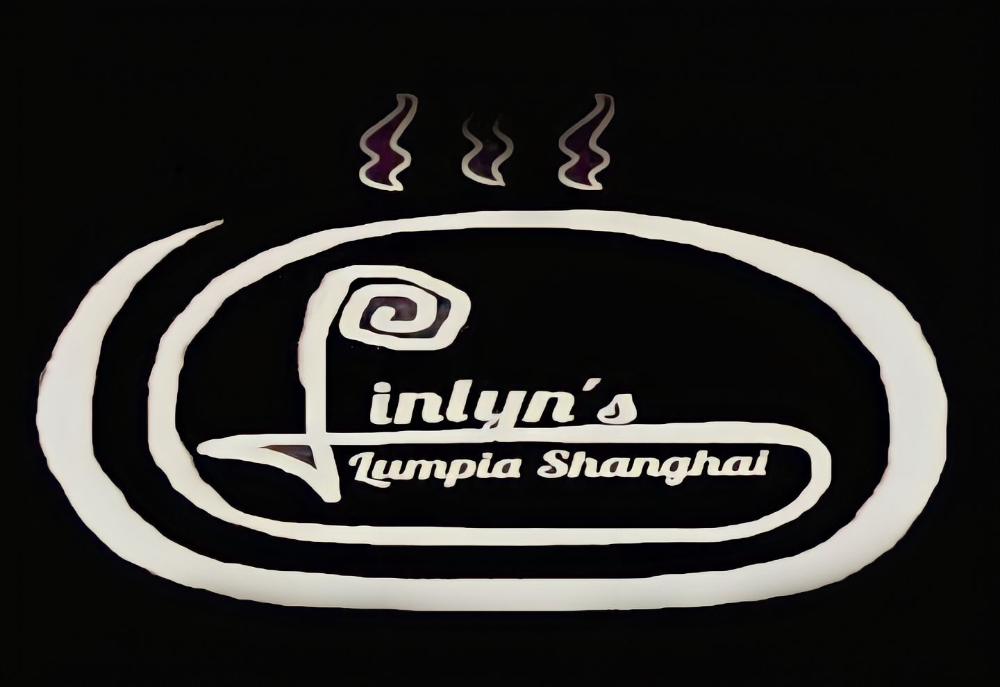
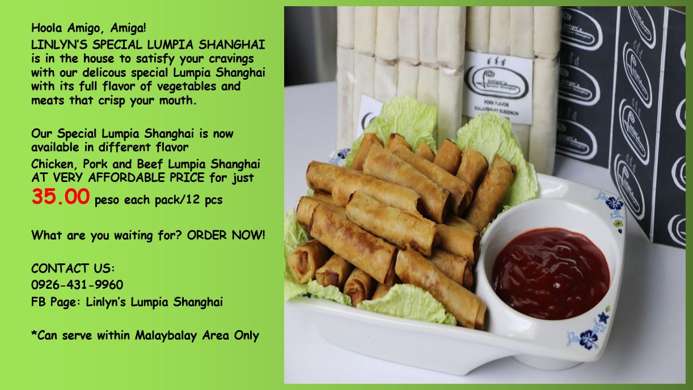

Lumpiang shanghai (also known as Filipino spring rolls, or simply lumpia or
lumpiya), is a Filipino deep-fried appetizer consisting of a mixture of giniling (any
kinds of ground meat) wrapped in a thin springroll wrapper.
Lumpiang Shanghai is
regarded as the most basic type of lumpia in Filipino cuisine. Lumpia Shanghai is a
perfect for any meal of the day whether it’s for lunch,snacks or dinner. The crisp
outer shell with the juicy bits of meat and vegetables inside make lumpia a
delicious treat, It must be fried before serving and it’s best to eat while its hot to feel
the dynamic crunch texture of its wrapper..
LINLYN’S SPECIAL LUMPIA SHANGHAI comes in a pack with 12 pieces roll of
raw lumpia shanghai in a variety of different meat flavors (pork, chicken and
beef).


Ingredients:
1 1/2 lbs ground meat (pork, chicken or beef)
1 whole egg
4 cloves of garlic finely minced
1/2 cup onions finely minced
1/2 cup carrots finely minced
1/2 cup shrimp finely minced
1/2 cup Chinese celery (flat leaf parsley) finely chopped
soy sauce
salt to taste
pepper to taste
spring roll wrappers
oil for frying
Procedure:
1. Mix all the ingredients in a bowl. Season with a little bit of salt and pepper and mix well.
2. Lay your wrapper in a plate. Take about a tablespoon of the filling and lay on top near the bottom end of the wrapper.
Form into a log shape. Fold the bottom end over slightly tugging your filling down so it would be wrapped tightly.
3. Fold the sides toward the middle.
4. Start rolling up. Brush the top end of your wrapper with a little bit of water to seal the lumpia.
5. Heat oil in a pan and deep fry your lumpia for about 10 to 15 minutes until golden brown.
6. Pull out and let excess oil drip over a strainer or paper towel. Serve the Lumpiang Shanghai - Filipino Spring Rolls with your favorite sweet and sour sauce or ketchup."

Thank You for Visiting My Site